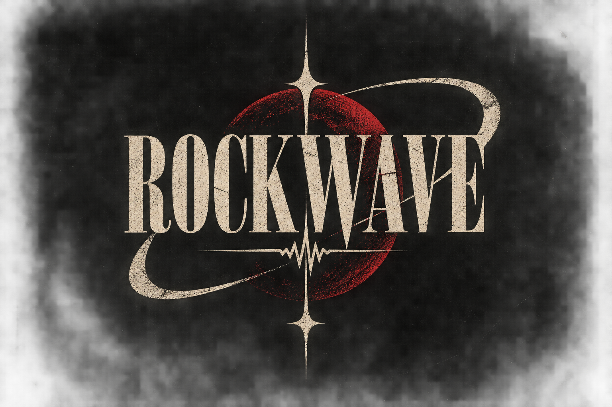

ROCKWAVE
Identidade RockWave
A marca principal do projeto e o visual que representa a RockWave.

O som não morreu.
Responda 10 perguntas e descubra qual das 50 ondas da RockWave combina mais com você. 🤘
Resultado possível do quiz. Descubra se essa é a sua onda.
Resultado possível do quiz. Descubra se essa é a sua onda.
Resultado possível do quiz. Descubra se essa é a sua onda.
Resultado possível do quiz. Descubra se essa é a sua onda.
Resultado possível do quiz. Descubra se essa é a sua onda.
Resultado possível do quiz. Descubra se essa é a sua onda.
Resultado possível do quiz. Descubra se essa é a sua onda.
Resultado possível do quiz. Descubra se essa é a sua onda.
Resultado possível do quiz. Descubra se essa é a sua onda.
Resultado possível do quiz. Descubra se essa é a sua onda.
Resultado possível do quiz. Descubra se essa é a sua onda.
Resultado possível do quiz. Descubra se essa é a sua onda.
Resultado possível do quiz. Descubra se essa é a sua onda.
Resultado possível do quiz. Descubra se essa é a sua onda.
Resultado possível do quiz. Descubra se essa é a sua onda.
Resultado possível do quiz. Descubra se essa é a sua onda.
Resultado possível do quiz. Descubra se essa é a sua onda.
Resultado possível do quiz. Descubra se essa é a sua onda.
Resultado possível do quiz. Descubra se essa é a sua onda.
Resultado possível do quiz. Descubra se essa é a sua onda.
Resultado possível do quiz. Descubra se essa é a sua onda.
Resultado possível do quiz. Descubra se essa é a sua onda.
Resultado possível do quiz. Descubra se essa é a sua onda.
Resultado possível do quiz. Descubra se essa é a sua onda.
Resultado possível do quiz. Descubra se essa é a sua onda.
Resultado possível do quiz. Descubra se essa é a sua onda.
Resultado possível do quiz. Descubra se essa é a sua onda.
Resultado possível do quiz. Descubra se essa é a sua onda.
Resultado possível do quiz. Descubra se essa é a sua onda.
Resultado possível do quiz. Descubra se essa é a sua onda.
Resultado possível do quiz. Descubra se essa é a sua onda.
Resultado possível do quiz. Descubra se essa é a sua onda.
Resultado possível do quiz. Descubra se essa é a sua onda.
Resultado possível do quiz. Descubra se essa é a sua onda.
Resultado possível do quiz. Descubra se essa é a sua onda.
Resultado possível do quiz. Descubra se essa é a sua onda.
Resultado possível do quiz. Descubra se essa é a sua onda.
Resultado possível do quiz. Descubra se essa é a sua onda.
Resultado possível do quiz. Descubra se essa é a sua onda.
Resultado possível do quiz. Descubra se essa é a sua onda.
Resultado possível do quiz. Descubra se essa é a sua onda.
Resultado possível do quiz. Descubra se essa é a sua onda.
Resultado possível do quiz. Descubra se essa é a sua onda.
Resultado possível do quiz. Descubra se essa é a sua onda.
Resultado possível do quiz. Descubra se essa é a sua onda.
Resultado possível do quiz. Descubra se essa é a sua onda.
Resultado possível do quiz. Descubra se essa é a sua onda.
Resultado possível do quiz. Descubra se essa é a sua onda.
Resultado possível do quiz. Descubra se essa é a sua onda.
Resultado possível do quiz. Descubra se essa é a sua onda.
10 perguntas. Veja quantas bandas você reconhece.
10 pistas diferentes para testar seu ouvido.
Clique nas cordas para fazer um riff. Acerte 8 batidas para liberar a conquista.
Ouça um riff sintetizado e descubra qual música ele representa. 🎸
Um arquivo visual do universo RockWave.
Aqui ficam artes, versões da identidade e momentos especiais do projeto. A galeria pode crescer junto com a RockWave.
A marca principal do projeto e o visual que representa a RockWave.
A frase que virou a assinatura da RockWave.
O arquivo visual da rádio que mantém os riffs tocando.
Uma referência escondida ao universo do rock que também aparece nos segredos.
Uma das identidades usadas nos Easter Eggs da RockWave.
Este espaço fica preparado para receber novas artes e imagens do projeto.
Ligue o som. A RockWave escolhe a próxima.
Um guia rápido de sonoridades, épocas e bandas que ajudaram a defini-las. 🤘
Surgimento: anos 1950
Bandas/artistas: Chuck Berry, Little Richard, Elvis Presley.
Surgimento: anos 1950
Bandas/artistas: Elvis Presley, Carl Perkins, Buddy Holly.
Surgimento: fim dos anos 1950–1960
Bandas: Dick Dale, The Ventures, The Beach Boys.
Surgimento: anos 1960
Bandas/artistas: Cream, The Yardbirds, Jimi Hendrix.
Surgimento: meados dos anos 1960
Bandas: The Beatles, Jefferson Airplane, Pink Floyd.
Surgimento: anos 1960
Bandas: Led Zeppelin, Deep Purple, AC/DC, Aerosmith.
Surgimento: fim dos anos 1960
Bandas: King Crimson, Yes, Genesis, Rush.
Surgimento: início dos anos 1970
Artistas/bandas: David Bowie, T. Rex, Sweet, Roxy Music.
Surgimento: fim dos anos 1960–1970
Bandas: Black Sabbath, Judas Priest, Motörhead.
Surgimento: meados dos anos 1970
Bandas: Ramones, Sex Pistols, The Clash, Dead Kennedys.
Surgimento: fim dos anos 1970–1980
Bandas: Bauhaus, The Cure, The Sisters of Mercy.
Surgimento: fim dos anos 1970–1980
Bandas: Talking Heads, Blondie, The Police, Devo.
Surgimento: fim dos anos 1970
Bandas: Joy Division, Siouxsie and the Banshees, Gang of Four.
Surgimento: início dos anos 1980
Bandas: Metallica, Slayer, Megadeth, Anthrax.
Surgimento: fim dos anos 1970–1980
Bandas: R.E.M., Pixies, Sonic Youth, The Replacements.
Surgimento: anos 1970–1980
Bandas/artistas: Queen, The Cars, Elton John, Fleetwood Mac.
Surgimento: meados dos anos 1980
Bandas: Death, Possessed, Morbid Angel, Cannibal Corpse.
Surgimento: fim dos anos 1980; auge nos 1990
Bandas: Nirvana, Pearl Jam, Soundgarden, Alice in Chains.
Surgimento: fim dos anos 1970–1980
Bandas: Nine Inch Nails, Ministry, KMFDM.
Surgimento: fim dos anos 1980
Bandas: My Bloody Valentine, Slowdive, Ride.
Surgimento: meados dos anos 1990
Bandas: Korn, Deftones, Limp Bizkit, Linkin Park.
Surgimento: meados dos anos 1990
Bandas: Foo Fighters, Bush, Creed, Silverchair.
Surgimento: anos 1990–2000
Bandas: Converge, Killswitch Engage, As I Lay Dying.
Surgimento: 1980s; novas ondas nos 1990–2000
Bandas: Rites of Spring, Jimmy Eat World, My Chemical Romance.
Surgimento: anos 1980; expansão nos 1990–2000
Bandas: The Smiths, Pavement, Arctic Monkeys, The Strokes.
Surgimento: início dos anos 1990
Bandas: Talk Talk, Slint, Tortoise, Mogwai.
Surgimento: início dos anos 1990
Bandas: Kyuss, Sleep, Monster Magnet, Queens of the Stone Age.
Surgimento: início dos anos 1990
Bandas: Oasis, Blur, Pulp, Suede.
Surgimento: fim dos anos 1990–2000
Bandas: The White Stripes, The Strokes, Yeah Yeah Yeahs.
Surgimento: anos 1960
Artistas/bandas: Bob Dylan, The Byrds, Crosby, Stills & Nash.
Surgimento: anos 1960–1970
Bandas: The Byrds, Eagles, Creedence Clearwater Revival.
Surgimento: fim dos anos 1960–1970
Bandas: Lynyrd Skynyrd, The Allman Brothers Band, .38 Special.
Surgimento: anos 1970–1980
Bandas: Journey, Foreigner, Bon Jovi, REO Speedwagon.
Surgimento: anos 1960–1970
Artistas/bandas: Roxy Music, David Bowie, Talking Heads.
Surgimento: meados dos anos 1960
Bandas: Jefferson Airplane, Blue Cheer, The 13th Floor Elevators.
Surgimento: anos 1960–1970
Bandas: Funkadelic, Red Hot Chili Peppers, Living Colour.
Surgimento: fim dos anos 1980–1990
Bandas: Rage Against the Machine, Faith No More, Linkin Park.
Surgimento: anos 1970 em diante
Bandas: The Police, Sublime, 311.
Surgimento: anos 1960–1970
Artistas/bandas: Santana, Maná, Los Fabulosos Cadillacs.
Surgimento: anos 1960
Artistas: Jorge Ben Jor, Trio Mocotó, Bebeto.
Surgimento: início dos anos 1980
Bandas: Black Flag, Bad Brains, Minor Threat, Dead Kennedys.
Surgimento: anos 1980; novas ondas depois
Bandas: Fugazi, At the Drive-In, Thrice.
Surgimento: fim dos anos 1980–1990
Bandas: Don Caballero, Slint, Battles.
Surgimento: anos 1980
Bandas: Sonic Youth, Big Black, The Jesus Lizard.
Surgimento: anos 1970
Bandas: Black Sabbath, Candlemass, Saint Vitus.
Surgimento: anos 1980
Bandas: Venom, Bathory, Mayhem.
Surgimento: anos 1980
Bandas: Helloween, Blind Guardian, Stratovarius.
Surgimento: anos 1990
Bandas: Nightwish, Epica, Within Temptation.
Surgimento: anos 1980
Bandas: Dream Theater, Queensrÿche, Tool.
Surgimento: várias épocas
Bandas: Can, King Crimson, Radiohead, Swans.
Surgimento: anos 1960–1970
Artistas/bandas: Elton John, Billy Joel, Ben Folds Five.
Surgimento: anos 1980 em grande expansão
Bandas: Legião Urbana, Titãs, Os Paralamas do Sucesso, Barão Vermelho.
Surgimento: anos 1970 em diante
Bandas: Depeche Mode, New Order, Muse.
Escolha uma época e descubra o que estava bombando no rock. 🎸
Selecione uma década para abrir o arquivo musical da RockWave.
* “Em destaque” significa músicas e artistas que tiveram grande presença popular ou nas paradas da época — não necessariamente as músicas mais ouvidas de todo o mundo.
Você encontrou uma área que não aparece no menu normal. 🤫
Um canto escondido da RockWave para quem gosta de procurar além do óbvio.
Fatos, histórias e pequenas loucuras do mundo do rock. 🧠
Explore a RockWave e desbloqueie seu arquivo de roqueiro. 🏆
Acerte 8 batidas no minigame.
Acerte o quiz de bandas.
Acerte a música pela pista.
Abra o Mapa do Rock.
Ative a Noite Extrema.
Ative o palco secreto da RockWave.
Descubra um dos novos códigos secretos.
Encontre a entrada para o arquivo subterrâneo.
Complete o quiz de estilo.
Ligue a RockWave Radio.
Abra uma curiosidade.
Visite uma década na Máquina do Tempo.
Encontre um Easter egg.
Abra a Galeria RockWave.
Use um filtro para investigar a galeria.
Acesse a RockWave em uma tela pequena.
Abra cinco áreas diferentes do site.
Nem tudo na RockWave está à vista.
Explore o site. Clique nas coisas. Digite coisas estranhas. Talvez você encontre alguma coisa.
Você encontrou um Easter egg da RockWave! 🤘
APERTE ESC PARA FECHAR
Gire pelo mundo do rock: escolha uma região para descobrir as cenas que marcaram — e ainda marcam — aquele lugar. 🌍
O grunge marcou Seattle no fim dos anos 1980 e início dos 1990; Detroit tem raízes fortes no garage rock, enquanto Los Angeles ficou ligada ao punk e ao hard rock.
Grunge • Garage rock • Punk • Hard rock
Nirvana, Pearl Jam, Soundgarden, The Stooges, MC5, Guns N’ Roses e Red Hot Chili Peppers.
As cenas mudam com o tempo: isto destaca movimentos historicamente associados à região, não um ranking de popularidade atual.
Uma coleção de lendas, álbuns e momentos que marcaram o rock. 🏆
Escolha os integrantes, o estilo e dê um nome para sua própria banda. 🤘
Se quiser apoiar o desenvolvimento do site, você pode contribuir via PIX.
Qualquer contribuição é opcional e ajuda a manter o RockWave sendo atualizado e cheio de novas ideias.
CHAVE PIX ALEATÓRIA
1ef4cf7a-6513-408b-876e-65e3f846e1f3Copie a chave para fazer sua contribuição.